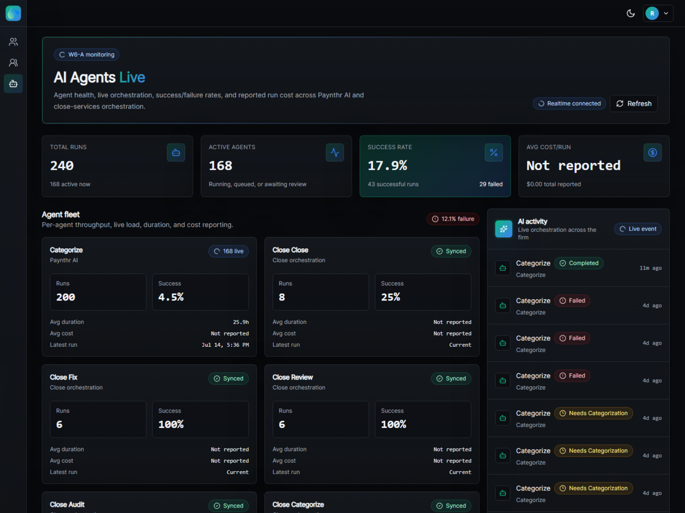
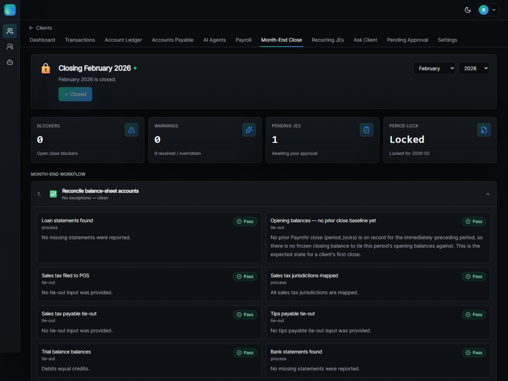
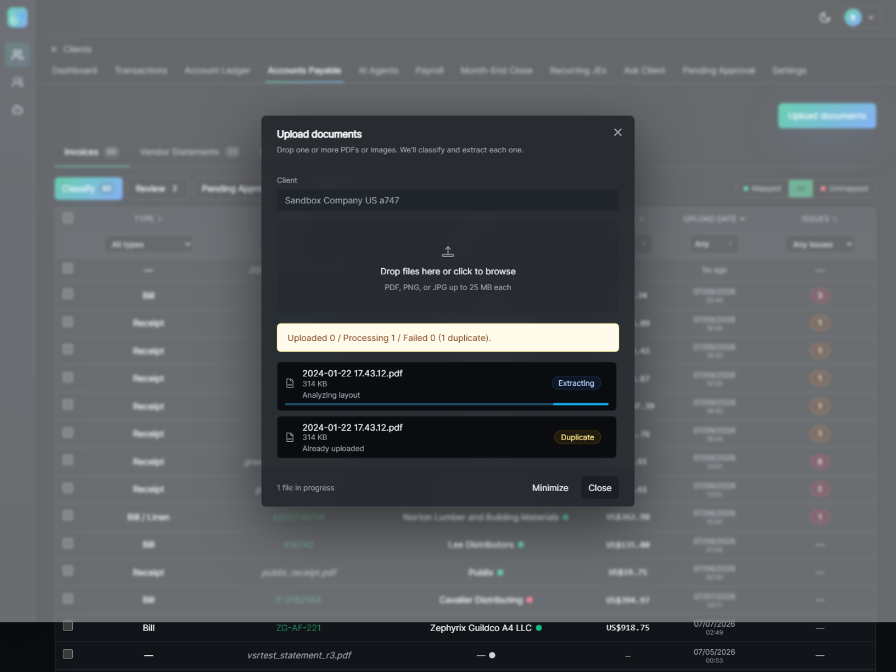
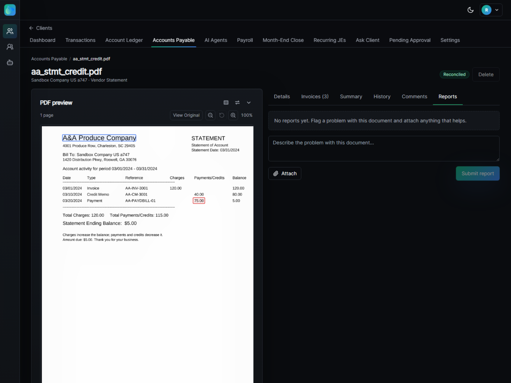
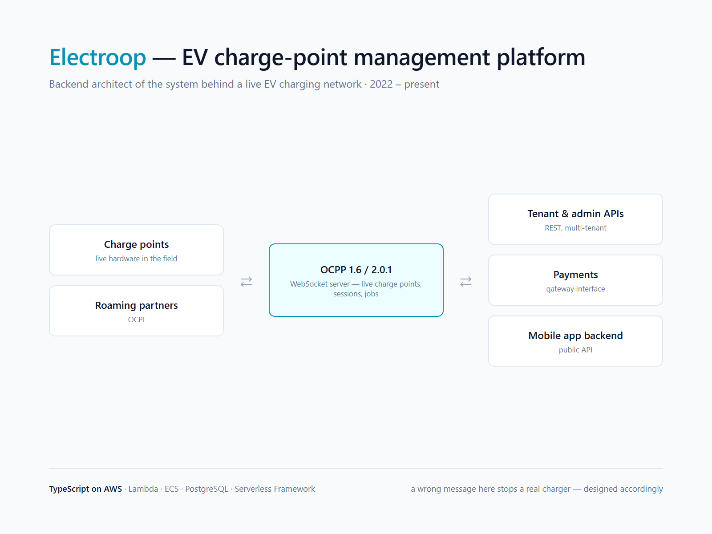
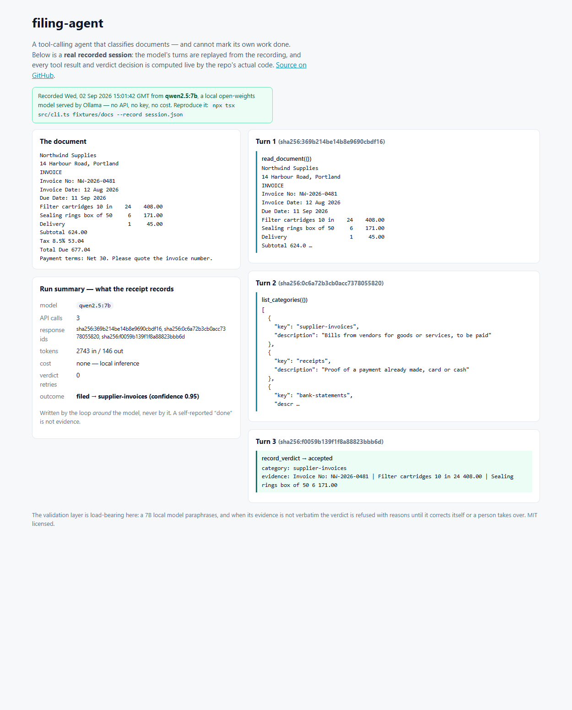
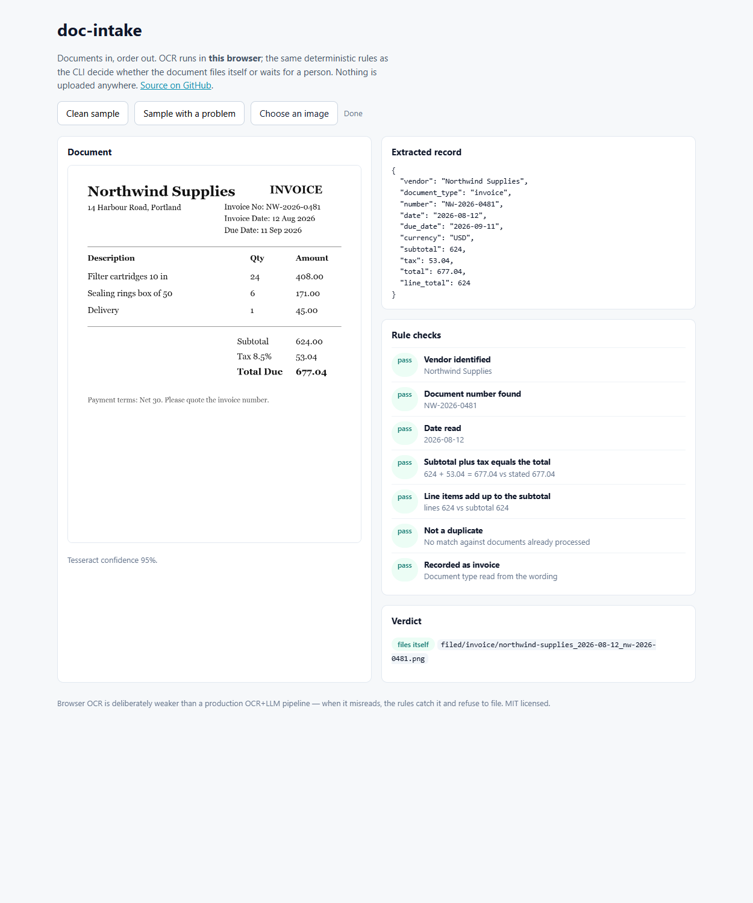
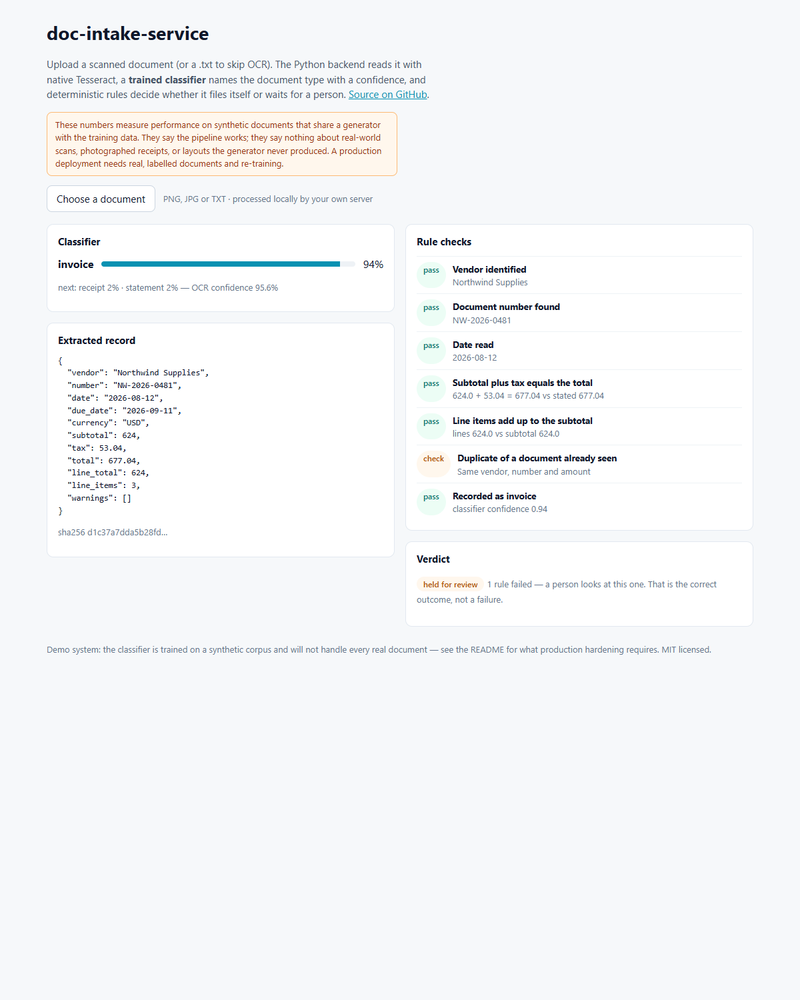
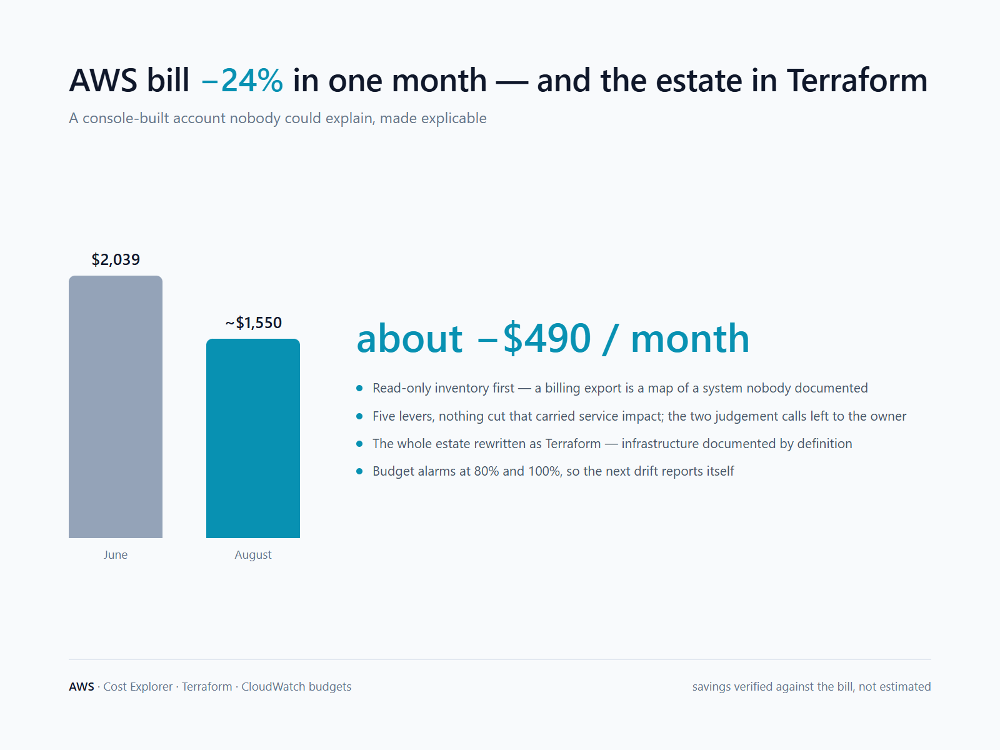

Kolkata, India (UTC+5:30) · works US and European hours · contracting through Jumacro Software Services Pvt. Ltd.
I build and run production backends that businesses depend on every day: an AI bookkeeping platform posting into QuickBooks Online for a US accounting firm, and the charge-point management system behind a live EV charging network. Nineteen years in software, the last decade contracting independently. My work sits where a wrong answer costs money - accounting, payments, banking data, hardware in the field - so I design for the times a system is wrong, not only for the times it is right.
In production
Paynthr - AI bookkeeping automation 2025 - present · paynthr.com
Built end to end - product, architecture, code, infrastructure, release - and live in production for a US accounting firm since June 2026. Bills, receipts, cheques and bank statements arrive from Dropbox and email; OCR and LLM extraction read them; categorisation is grounded in each client's explicit accounting rules, so the model reads and suggests but never invents the accounting. A per-client trust dial decides what posts to QuickBooks Online unattended and what waits for a bookkeeper. Duplicates are refused at upload. Month-end close runs as a workflow of tie-out checks with a period lock. Every decision carries an audit trail a non-engineer can read.
267 / 275real invoices reconciled to the cent in a four-day certification on a fresh firm in staging
179 / 180header fields right on an 18-document sample
210findings filed openly before the production release, defects included
20+Go services on AWS ECS, Aurora PostgreSQL with row-level security, Terraform, CI/CD
Claude on AWS Bedrock - tool-use, prompt caching, streamingPaddleOCRpgvector + Titan embeddingsPostgreSQL row-level securityQuickBooks OnlineStripeYodlee bank feedsDropbox & email intakeSQS-buffered workersReact

Agents dashboard: per-agent runs with success and failure rates as first-class numbers. An agent that cannot report failure honestly cannot be trusted to report success.

Month-end close as a workflow of tie-out checks - trial balance, bank and loan statements, sales tax - each Pass, overridden or waiting, with a period lock.

The same PDF uploaded twice: one proceeds to extraction, the second is refused at the door. In bookkeeping a duplicate is a bill paid twice.

A vendor statement read and reconciled: charges, credit memo and payment tie to the ending balance (120.00 - 40.00 - 75.00 = 5.00); anything that does not tie is flagged, not posted.
Screens show the staging environment with QuickBooks sandbox companies and seeded test data only. No client data appears anywhere on this page.
Electroop - EV charge-point management 2022 - present
Backend architect of the platform behind a live EV charging network. The OCPP 1.6 / 2.0.1 WebSocket server talks to real chargers in the field over persistent connections, so it has to survive reconnection storms after outages, keep message ordering per charger, handle every message idempotently and isolate tenants. Around it: OCPI for roaming, the payment gateway interface, session and job services, tenant, admin and public REST APIs, and the backend for the mobile app. One codebase now ships seven white-label operator apps. TypeScript on AWS, with C# and Python components where the ecosystem required them.

Electroop's customers are not mine to name, and none of its code is reused anywhere. What transfers is the knowledge of where these systems break.
Three things from production
The questions that matter in this work are not "does it run" but "what happens when it is wrong". Three real cases, told plainly.
The dependency that answered 28 milliseconds too late
The categorisation agent fetches a client's chart of accounts and vendor list from QuickBooks before it can code anything. Those fetches began timing out - no error from QuickBooks, a timeout on our side. Instrumentation, not a complaint, found it: our client gave up at exactly 30 seconds and QuickBooks answered at 30.03. Two changes: a longer timeout, and a cache-warm wired into the QuickBooks connect hook so the first categorisation for a client never pays that cold fetch at all. A timeout that matches a dependency's worst case by coincidence is a bug waiting for a slow day; the fix for a slow dependency is usually to stop needing it on the hot path.
The scope gate that did not cover 38 routes
Row-level security isolated tenants. A member-scope gate restricted which clients a firm member could act on - but 38 write routes resolved their object by (tenant, id) and never consulted client scope. A staging probe with real session tokens proved a member scoped to one client could act on another client's record and get HTTP 200. The same binary was running in production, so a read-only forensic pass followed: the backing tables had never received a row in the life of the database, the audit record held zero actor-to-client mismatches, and seven days of HTTP logs agreed. Latent, never realised; the fix was written the same week. The lesson kept: row-level security isolates tenants, not clients within a tenant, and scope has to be a property of the route table, not of individual handlers.
When not to call the model
Mapping a vendor or a line item to a client's chart of accounts runs as a cascade, cheapest and most certain first. Exact per-tenant history - no model. Then similarity search over embeddings of that tenant's past mappings, in pgvector. Then a cold-start path: embedding match against the live chart of accounts and vendor list with a small LLM tiebreak. And, mandatorily, an "uncertain" result carrying the top three candidates for a reviewer when nothing clears the bar - the model is never allowed to pick a confident-looking best guess. Every reviewer approval feeds back, so a mature client is served mostly from history with no model call at all.
Public code
Three small repositories that show the working method in the open: the model proposes, deterministic code decides. Tests, CI and live demos; limits labelled honestly.
filing-agentA tool-calling LLM agent that cannot mark its own work done. Hand-written tool loop on a fully local model (qwen2.5:7b via Ollama); fabricated evidence is refused with the closest matching document line as a hint; retries are bounded; every run writes a receipt with response digests and token counts that the model cannot author.github.com/mithundas79/filing-agent · a real recorded session, replayed
doc-intakeDocuments in, order out - local OCR plus deterministic accounting rules decide what gets filed and what a person sees. No cloud, no key, no model. TypeScript, 27 tests, CI, in-browser demo.github.com/mithundas79/doc-intake · live demo
doc-intake-serviceThe full-stack sibling: Python/FastAPI and React, native Tesseract OCR, a scikit-learn document-type classifier trained on a synthetic corpus with its honest metrics committed to the repository. The demo catches a duplicate upload and holds it for review.github.com/mithundas79/doc-intake-service

filing-agent: a recorded session with the receipt the model cannot write.

doc-intake: extraction, seven rule checks, a verdict - in the browser.

doc-intake-service: a duplicate caught and held for review.
Also
Shipping operations backend, US logistics company - a serverless shipping-label OCR pipeline on AWS (S3, SQS-buffered Lambdas with reserved concurrency, Textract, SNS; raw response kept so every extraction can be re-checked) and a direct-carrier gateway in Python/FastAPI, in development. Their Laravel vendor portal: production bug-fixing and a major-version upgrade.
2025 - 2026
AWS cost reduction and infrastructure codification - a console-built account inventoried read-only, rewritten as Terraform, and cut 24% ($2,039 to about $1,550 a month) with nothing removed that carried service impact; budget alarms so the next drift reports itself.
2025
Upwork, 47 completed engagements, 2,400+ hours, 44 rated 5.0 - Node and MEAN microservices, WebSocket real-time systems, MongoDB and Neo4j on AWS and Google Cloud, Laravel, for food delivery, order management, dispatch and asset-tracking products.
2015 - 2020
Earlier - programmer, project manager and architect roles for companies in India, Canada and Germany. PHP was the first professional language, from 2006.
2006 - 2014

How I work
Scope, acceptance criteria and risks written down and agreed before I build. If I think a requirement is wrong I say so once, with the reason, and then build what you decide.
Nothing is "done" until I have driven it myself on a deployed environment and shown the evidence - not a passing test, the real thing. On Paynthr that was a written certification plan the non-technical owner could verify himself; twelve services were promoted on that evidence and every defect found on the way was filed openly.
Small reviewable pull requests, staging before production, a rollback path stated in every release note. All infrastructure in Terraform, so it is documented by definition.
Prompts are versioned code with tests and a frozen evaluation snapshot; failure modes are written into them explicitly; instrumentation comes before conjecture.
I use AI coding tools heavily and openly, inside a review-and-verify process I run. You get senior-engineer throughput with senior-engineer accountability.
Limits, stated
Backend-led. I ship React UIs from designs; I am not a design-led front-end specialist.
AI application engineering, not data science. No fine-tuning, no PyTorch or TensorFlow work, no research claims. The one trained model in my public work is a scikit-learn classifier on a synthetic corpus, labelled as such.
"Retrieval" in my production system means similarity search over a client's own mapping history for entity resolution - not document question-answering.
The shipping gateway above is in development; the scope-gate fix above is written and reviewed, not yet merged at the time of writing. I would rather say so here than have you find out later.